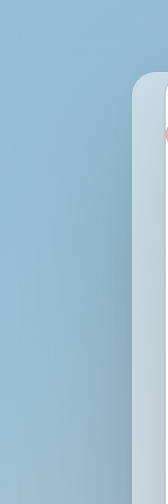

Dock a window to the screen edge. Touch the edge to see it.
OrbPeek is a macOS menu bar app. Press ⌃⇧ and an arrow key to move the front window off screen, leaving a thin preview strip at that edge. Point at the strip and the window appears against the edge; move away and it goes back.
brew install --cask zhiyozhao/tap/orbpeekYour main window keeps its space
Notes, chat, a terminal: windows you glance at all day get in the way when they sit next to your work. OrbPeek moves only the window you pick and leaves every other window where it is.
Minimize
The window goes to the Dock, and you have to find it and click it.
With OrbPeek the window stays at the edge you put it on. Point there and it comes out; move away and it goes back.
Split View
Two windows share the screen, so your main window is always narrower.
OrbPeek leaves your main window's size alone. The other window covers it only while you look at it.
Stage Manager
Rearranges all your windows and keeps thumbnails along one side.
OrbPeek handles only the window you pressed the shortcut on. Your layout stays the same.

The preview strip
What stays at the edge is a picture of the window's own edge: dock it right and you see its left edge, dock it to the top and you see its bottom edge. The strip lines up with where the window was, so you can tell which window it is and where.
By default the strip is 15 px wide and half transparent, and clicks pass through it. You can change its width and opacity in Settings. It is a still picture, not a live view; it is taken again when the window goes back while its app is in front.
How it works
Everything starts with a shortcut.
| Dock | ⌃⇧ plus ← → ↑ ↓ docks the front window to the left, right, top or bottom edge. Press another direction on a docked window to move it to that edge. |
|---|---|
| See it | Rest the pointer on the strip for a moment (0.15 s). Fling the pointer at the screen edge and the window appears at once. |
| Hide it again | Move the pointer out after using the window, or switch to another app. |
| Move or resize | While the window is out, drag it along the edge and the strip follows to the new spot. Resizing keeps it docked. |
| Undock | Click the window's name in the menu bar icon and it goes back to where it was. Or drag it toward the middle of the screen while it is out, and it stays where you drop it. |
You can change the shortcuts in Settings. Quitting OrbPeek puts every docked window back where it was.
Permissions
The menu bar icon shows both permissions. Click one that is missing to grant it.
AccessibilityRequired
To read and move windows. It works as soon as you grant it; no restart needed.
Screen RecordingOptional
Only for the preview strip: one capture of the window's area each time you dock it, kept in memory. No video, no audio. Without it OrbPeek still works and the strip is a dark translucent placeholder.
What it doesn't do
- No automatic dockingOnly the shortcut docks a window. Dragging it to the edge does not.
- No live previewThe strip is a still picture. OrbPeek never keeps recording the screen.
- No window layoutNo tiling, no splitting. It leaves your other windows alone.
- No networkNo account, no analytics, nothing uploaded.
Install with Homebrew
brew install --cask zhiyozhao/tap/orbpeek